SIMULACIÓN LOCAL
Barrido 0-180° con objetivos simulados, ruido de sensor y ecos con persistencia realista. Listo sin hardware.
SISTEMA DE VIGILANCIA TÁCTICA · FASE 2
Simulador de estación de radar estilo militar: barrido por servomotor, detección de objetivos por distancia, monitoreo de telemetría y alertas de contacto. Conecta un Arduino real, una red WebSocket o usa el serial de simulacro.

■ GRAVANDO · SONAR OX-7Barrido 0-180° con objetivos simulados, ruido de sensor y ecos con persistencia realista. Listo sin hardware.
Web Serial directo: conecta tu Arduino con HC-SR04 + servomotor SG90 y recibe lecturas en vivo a 9600 baudios.
Puente WebSocket: cualquier equipo de la red dibuja el mismo radar. Ideal para sala de mando.
Sirena, pantalla en rojo y silencio radio para contactos críticos. Protocolo de emergencia integrado.
Sistema de logros con soldados aleatorios: cada acción del operador otorga un mérito otorgado.
Mezcla de ambiente de radio, pings de sonar sintetizados y confirmación acústica de contacto.
Elige la fuente de datos: SIMULACIÓN, puerto SERIE real, o SERIAL SIMULADO sin hardware.
Conéctate por Web Serial o WebSocket y observa el LINK en modo SINCRONIZADO CON DATOS.
Define objetivos (ángulo,distancia), vigila la telemetría y activa la ALERTA ROJA ante un contacto.


% Radar ultrasónico (Arduino)
barrido 0 -> 180 (servo SG90)
HC-SR04 · 9600 baudios
Formato: angulo,distancia
% Estación de red (opcional)
python radar_bridge_puro.py
pagina -> :8000
datos -> ws://IP:8765// radar_esp32_ws.ino
WiFi + WebSocket + Web server
Sirve su propia interfaz radar
Cualquier dispositivo:
http://radar.localSe ejecuta sin PC: el módulo barre, mide y transmite por sí mismo.